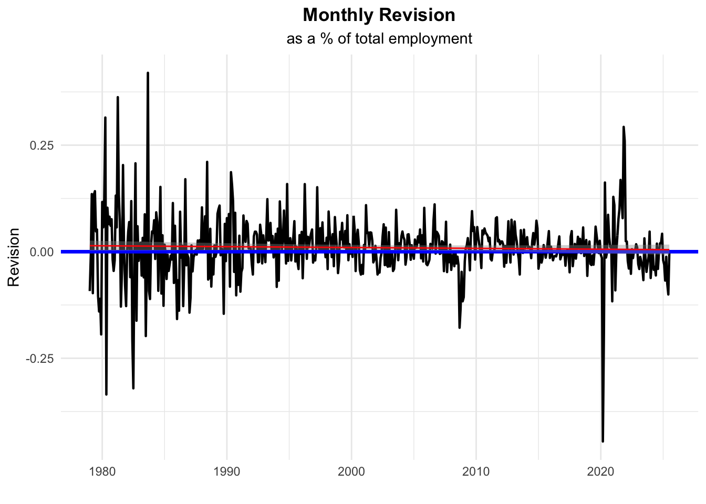
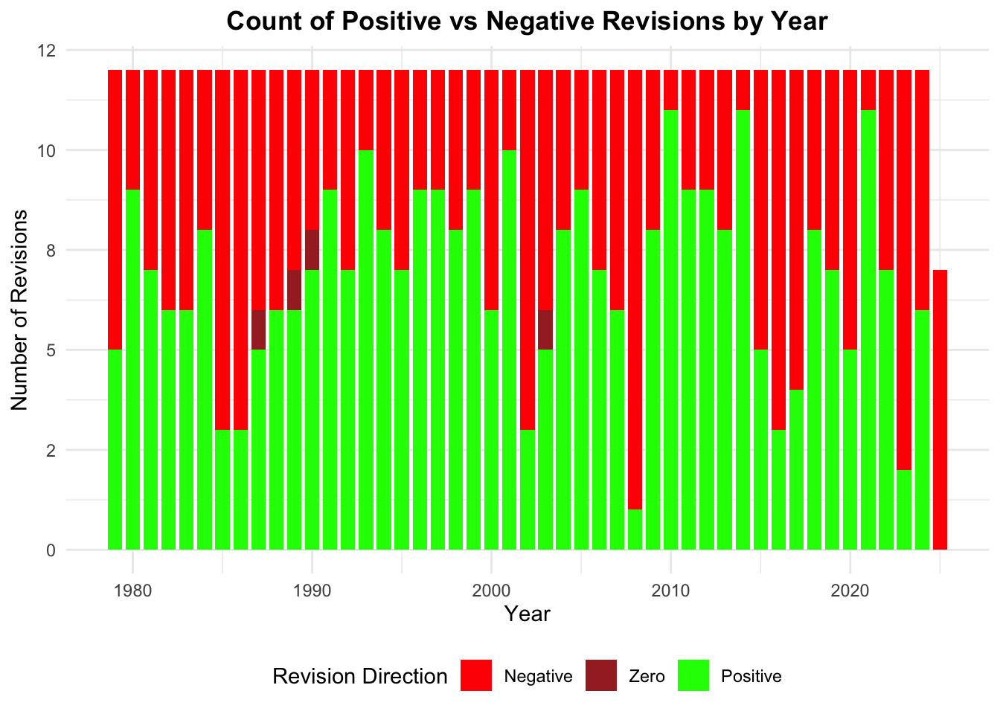
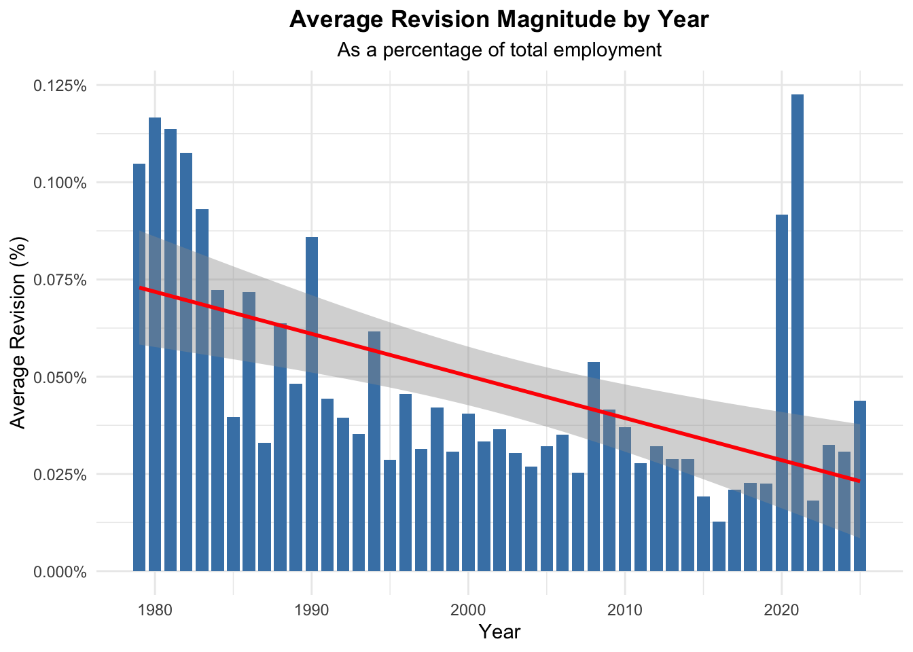
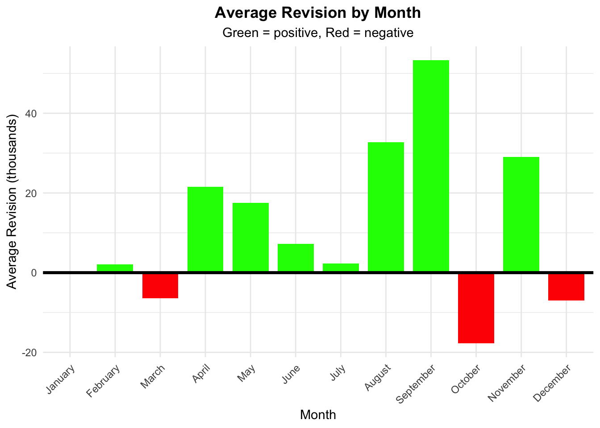
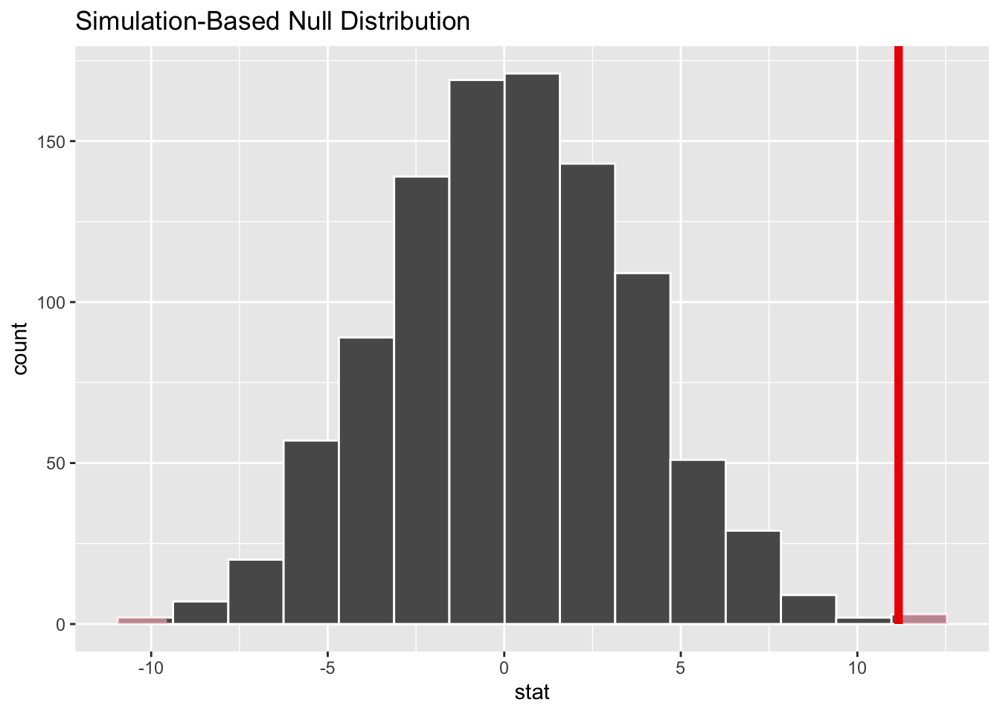
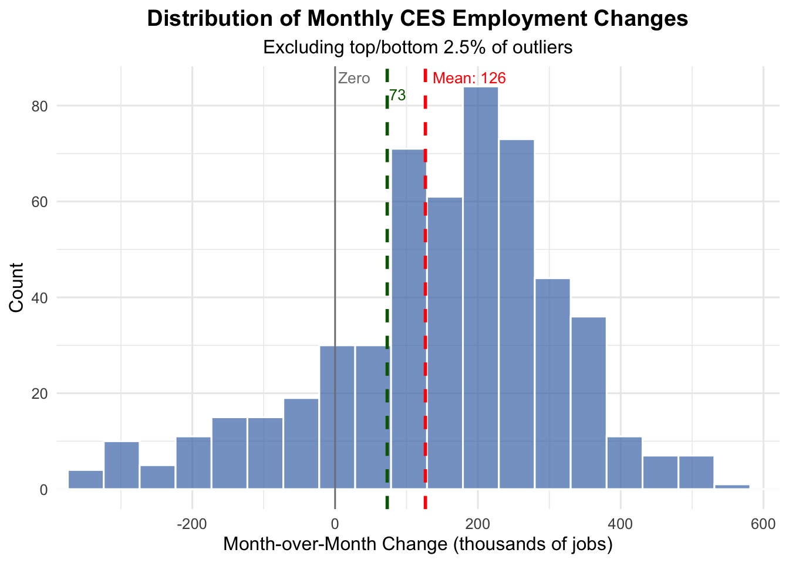

The Bureau of Labor & Statistics (BLS) regularly publishes data on employment in the United States. In this mini-project, we will take a look at the BLS’s Monthly Current Employment Statistics (CES), AKA “the jobs numbers.” These statistics are considered a bellwether for the state of the economy, and as such, attract the attention of politicians and the media. Recent headlines were made following the firing of Dr. Erika McEntarfer, the former Commissioner of Labor Statistics. At issue was the recent revision of the CES numbers. Though it is an established part of the process to release preliminary numbers followed by revisions, the size and direction of a recent revision was alleged to have been “rigged” for political purposes.
This project will rely on two separate sets of data:
The (final, monthly) CES estimates of the total employment level of the United States (seasonally-adjusted, total non-farm payroll)
The cycle-to-cycle revisions of the CES estimate (3 per month).
Data Acquisition and Preparation
To work with this data, web scraping will be used. This means that data presented on public websites via html and related code will be retrieved and stored as data frames that can then be analyzed.
CODE: Scrape final jobs numbers from data.bls.gov (Task 1)
library(rvest)library(httr2)library(tidyverse)library(dplyr)# Submit the complete request with year range# Define the series ID(s) and year rangeseries_ids <-c("CES0000000001") # Add more IDs as needed (but only need one value for now)from_year <-1979to_year <-2025# Make the POST request with all parametersresp <-request("https://data.bls.gov/pdq/SurveyOutputServlet") %>%req_body_form(request_action ="get_data",reformat ="true",from_results_page ="true",from_year = from_year,to_year = to_year,initial_request ="false",data_tool ="surveymost",series_id = series_ids # Can be a vector for multiple series# Note: Go.x and Go.y are button coordinates, usually not required ) %>%req_perform()# Parse the HTML responseresults_html <- resp %>%resp_body_html()# Extract the table datatable_data <- results_html %>%html_element("table") %>%# Adjust selector if neededhtml_table()# print(head(table_data)) # COMMENT OUT TO SIMPLIFY# If there are multiple tables, extract specific ones--TABLE 2 IS WHAT IS NEEDED# Check how many tables existall_tables <- results_html %>%html_elements("table")# cat("Number of tables found:", length(all_tables), "\n")# Extract a specific table by indextable_data <- all_tables[[2]] %>%html_table()# Clean and structure final data# Remove the last row (footnote about preliminary data)cleaned_data <- table_data %>%as.data.frame() %>%slice(1:(n()-1)) # Remove last row# Create a flag for preliminary data before removing the "(p)" markerprelim_flag <- cleaned_data %>%mutate(across(-Year, ~grepl("\\(P\\)", .))) %>%select(-Year)# Clean the data: remove "(p)" and convert to numericcleaned_data <- cleaned_data %>%mutate(across(-Year, ~gsub("\\(P\\)", "", .))) %>%# Remove (p)mutate(across(-Year, ~gsub(",", "", .))) %>%# Remove commas if presentmutate(across(-Year, ~trimws(.))) %>%# Trim whitespacemutate(across(-Year, ~as.numeric(.))) # Convert to numeric# Pivot the data to long formatfinal_df <- cleaned_data %>%pivot_longer(cols =-Year,names_to ="Month",values_to ="Value" ) %>%# Create a date columnmutate(Month_Num =match(Month, month.abb), # Convert month abbreviation to numberDate =as.Date(paste(Year, Month_Num, "01", sep ="-")) ) %>%# Remove rows with missing valuesfilter(!is.na(Value))# Add preliminary flag to the final dataprelim_long <- prelim_flag %>%mutate(Year = cleaned_data$Year) %>%pivot_longer(cols =-Year,names_to ="Month",values_to ="Is_Preliminary" )final_df <- final_df %>%left_join( prelim_long %>%select(Year, Month, Is_Preliminary),by =c("Year", "Month") ) %>%# Reorder columns: Date, Value, Is_Preliminaryselect(Date, Value, Is_Preliminary) %>%arrange(Date)# print(final_df) # COMMENT OUT LATER# Optional: View just the preliminary dates# print("\nPreliminary data points:") # COMMENT OUT TO SIMPLIFY# print(final_df %>% filter(Is_Preliminary)) # COMMENT OUT TO SIMPLIFY
CODE: Scrape revisions to jobs numbers from www.bls.gov (Task 2)
library(rvest)library(httr2)library(dplyr)library(purrr)# Initial request with proper headersresp <-request("https://www.bls.gov") |>req_url_path("web", "empsit", "cesnaicsrev.htm") |>req_headers(`User-Agent`="Mozilla/5.0 (Macintosh; Intel Mac OS X 10.15; rv:143.0) Gecko/20100101 Firefox/143.0") |>req_error(is_error = \(resp) FALSE) |>req_perform()revision_html_body <-resp_body_html(resp)# STEP 2: Create a function to scrape any year# =============================================scrape_revision_year <-function(year, page_html = revision_html_body) {# Get all tables all_tables <- page_html %>%html_elements("table")# Calculate table index based on year# Pattern: 2025 is index 4, 2024 is 5, 2023 is 6, etc. table_index <-4+ (2025- year)# Handle case where table doesn't existif (table_index >length(all_tables) || table_index <1) {warning(paste("No table found for year", year))return(NULL) }# Extract table body table_data <- all_tables[[table_index]] %>%html_element("tbody") %>%html_table(header =FALSE)# Process the table processed <- table_data %>%slice_head(n =12) %>%select(Month =1,original =3,final =5,revision =8 ) %>%# Clean month names (remove periods)mutate(Month =gsub("\\.", "", Month)) %>%mutate(date =as.Date(paste(year, match(Month, month.abb), "01", sep ="-")) ) %>%mutate(across(c(original, final, revision), ~as.numeric(gsub(",", "", .))) ) %>%select(date, original, final, revision)return(processed)}# Test the function# test_2024 <- scrape_revision_year(2024)# print(test_2024)# Test the function# test_2020 <- scrape_revision_year(2020)# print(test_2020)# STEP 3: Apply to all years (1979-2025)# =======================================# Using map_df from purrrall_revisions <-map_df(1979:2025, scrape_revision_year)# print(head(all_revisions, 20))# print(tail(all_revisions, 20))# print(paste("Total rows:", nrow(all_revisions)))
Exploratory Analysis (Task 3)
To get started, lets’s explore the data and visualize it.
As the plot shows, employment has steadily grown from 1979-2025 with a few notable exceptions, such as during recessions and the COVID period.
CODE: Clean the data and analyze
library(dplyr)library(lubridate)# There are some null values in 2003 final and revision values due to the implementation of the CES sample redesign. Let's fill those nulls with the most appropriate values so that we can compute trends.CES$final[CES$Date =="2003-03-01"] <--124# this one can be adjusted based on second revision on the website. Not scraped but easy to check.CES$revision[CES$Date =="2003-03-01"] <- CES$final[CES$Date =="2003-03-01"] - CES$original[CES$Date =="2003-03-01"] # this one can now be computed with original and final values.CES$final[CES$Date =="2003-04-01"] <- CES$original[CES$Date =="2003-04-01"] # this one hadn't changed so let's use the original value for final alsoCES$revision[CES$Date =="2003-04-01"] <- CES$final[CES$Date =="2003-04-01"] - CES$original[CES$Date =="2003-04-01"] # this one can be computed now# Create enriched analysis data frame to compute trendsCES_analysis <- CES %>%filter(Is_Preliminary==FALSE) %>%mutate(# Extract time componentsYear =year(Date),Month_Name =month(Date, label =TRUE, abbr =FALSE),Decade =floor(Year /10) *10,# Revision metricsRevision_Abs =abs(revision),Revision_Pct_Final = (revision / final) *100, # relative magnitude of the revision v. the final changeRevision_Pct_Employment = (revision / Value) *100, # relative magnitude of the revision vs. the overall employment level# Direction flagsRevision_Positive = revision >0,Revision_Negative = revision <0,Revision_Zero = revision ==0 )# Display summary# print(CES_analysis)# Some basic statsmean_change <- CES %>%mutate(prev_Value =lag(Value), # Get the previous month's meanmom_change = Value - prev_Value, # Absolute changemom_percent_change = (Value - prev_Value) / prev_Value *100# Percentage change ) %>%summarize(mean_change =mean(mom_change, na.rm =TRUE) *1000 ) %>%pull(mean_change)mean_percent_change <- CES %>%mutate(prev_Value =lag(Value), # Get the previous month's meanmom_change = Value - prev_Value, # Absolute changemom_percent_change = (Value - prev_Value) / prev_Value *100# Percentage change) %>%summarize(mean_percent_change =mean(mom_percent_change, na.rm =TRUE) ) %>%pull(mean_percent_change)mean_revision <- CES %>%summarize(mean_revision =mean(revision, na.rm =TRUE) *1000) %>%pull(mean_revision)
Mean Monthly Change: 126,461 Mean Monthly Percent Change: 0.11%
While the bigger picture story of job growth and loss is interesting, this project is especially focused on the revisions to month-to-month changes that are reported. Each month, the change from the previous month is reported, and this figure is revised about a month later and a final revision is made about two months later. Of special interest is the final revision, and the magnitude of the change from the first number reported.
Mean Monthly Final Revision: 11,168
Let’s take a look at the largest positive and negative revisions.
As you can see, the largest positive revision was 437 reported for 2021-11-01. This represents a percentage change of 0.293%. The largest postive revision by percent was 0.42% reported for 1983-09-01.
The largest negative revision was -672 reported for 2020-03-01. This represents a percentage change of -0.445%. The largest negative revision by percent was -0.445% reported for 2020-03-01.
CODE: Plot revisions over time
ggplot(CES_analysis, aes(x=Date, y=Revision_Pct_Employment)) +geom_line(color ="black", linewidth =0.8) +geom_hline(yintercept =0, color ="blue", linewidth =1.2) +geom_smooth(method ="lm", se =TRUE, color ="red", linewidth = .5) +ylab("Revision") +xlab("") +labs(title="Monthly Revision", subtitle="as a % of total employment") +theme_minimal() +theme(plot.title =element_text(hjust =0.5, face ="bold"),plot.subtitle =element_text(hjust =0.5) )

Looking at the monthly revisions as a percent of total employment, the trend appears to be an overall reduction in the variance of average revision, suggesting an improvement in the accuracy of the initial reports. Of course the COVID period is an exception. The average revision (red trend line) is just slightly positive, though sloping ever so slightly toward zero. Recent revisions are moderately negative.
CODE: Revision Positivity
# summarize the counts of revisionspositive_by_year <- CES_analysis %>%group_by(Year) %>%summarise(Total_Revisions =n(),Positive_Revisions =sum(Revision_Positive),Negative_Revisions =sum(Revision_Negative),Zero_Revisions =sum(Revision_Zero),Pct_Positive = (Positive_Revisions / Total_Revisions) *100,.groups ="drop" )# report the counts of revisionsleast_positive_year <- CES_analysis %>%group_by(Year) %>%summarise(Total_Revisions =n(),Positive_Revisions =sum(Revision_Positive),Negative_Revisions =sum(Revision_Negative),Zero_Revisions =sum(Revision_Zero),Pct_Positive = (Positive_Revisions / Total_Revisions) *100,.groups ="drop" ) %>%slice_max(Negative_Revisions, n=1)# Reshape data for stacked bars with countspositive_by_year_stacked <- positive_by_year %>%select(Year,Negative_Revisions, Zero_Revisions, Positive_Revisions, ) %>%pivot_longer(cols =c(Negative_Revisions, Zero_Revisions, Positive_Revisions),names_to ="Type",values_to ="Count") %>%mutate(Type =factor(Type, levels =c("Negative_Revisions", "Zero_Revisions", "Positive_Revisions")))# Create stacked bar chartggplot(positive_by_year_stacked, aes(x = Year, y = Count, fill = Type)) +geom_col(width =0.8) +scale_fill_manual(values =c("Negative_Revisions"="red", "Zero_Revisions"="brown","Positive_Revisions"="green"),labels =c("Negative", "Zero", "Positive"),name ="Revision Direction") +ylab("Number of Revisions") +xlab("Year") +scale_y_continuous(labels = scales::label_number(accuracy =1)) +labs(title ="Count of Positive vs Negative Revisions by Year") +theme_minimal() +theme(plot.title =element_text(hjust =0.5, face ="bold"),legend.position ="bottom" )

If we look at the count of positive, negative, and zero revisions by year, we can see that some years have more positive revisions and others have more negative revisions. 2025 is not over, but so far all of the revisions have been negative. The year with the most negative revisions is 2008 with 11.
CODE: Revision magnitude
# calculate average and median revision percentagerevision_pct_employment <- CES_analysis %>%group_by(Year) %>%summarise(Avg_Revision_Pct =mean(abs(Revision_Pct_Employment), na.rm =TRUE),Median_Revision_Pct =median(abs(Revision_Pct_Employment), na.rm =TRUE),.groups ="drop" )# get max and min valuesrevision_pct_employment_max <- revision_pct_employment %>%slice_max(Avg_Revision_Pct, n=1)revision_pct_employment_min <- revision_pct_employment %>%slice_min(Avg_Revision_Pct, n=1)# plot itggplot(revision_pct_employment, aes(x = Year, y = Avg_Revision_Pct)) +geom_col(fill ="steelblue", width =0.8) +geom_smooth(method ="lm", se =TRUE, color ="red", linewidth =1) +ylab("Average Revision (%)") +scale_y_continuous(labels = scales::percent_format(scale =1)) +labs(title ="Average Revision Magnitude by Year",subtitle ="As a percentage of total employment") +theme_minimal() +theme(plot.title =element_text(hjust =0.5, face ="bold"),plot.subtitle =element_text(hjust =0.5) )

Looking more specifically at the magnitude of the average revision by year as a percentage of total employment, we can see that the long term trend has been a significant and steady decline, even given the somewhat larger revisions this year and the spike of the COVID period. The largest average revision was 0.123% in 2021 and the smallest average revision was 0.013% in 2016.
CODE: Average revision by month
revisions_by_month <- CES_analysis %>%group_by(Month_Name) %>%summarise(Count =n(),Avg_Revision =mean(revision, na.rm =TRUE),Avg_Revision_Abs =mean(Revision_Abs, na.rm =TRUE),Median_Revision_Abs =median(Revision_Abs, na.rm =TRUE),Pct_Positive = (sum(Revision_Positive) /n()) *100,.groups ="drop" ) %>%arrange(desc(Avg_Revision_Abs))# get max and min and closest to zero months/valuesrevisions_by_month_max <- revisions_by_month %>%slice_max(Avg_Revision, n=1)revisions_by_month_min <- revisions_by_month %>%slice_min(Avg_Revision, n=1)revisions_by_month_closest_zero <- revisions_by_month %>%slice_min(abs(Avg_Revision), n =1)ggplot(revisions_by_month, aes(x = Month_Name, y = Avg_Revision)) +geom_col(aes(fill = Avg_Revision >0), width =0.8) +scale_fill_manual(values =c("TRUE"="green", "FALSE"="red"), guide ="none") +geom_hline(yintercept =0, color ="black", linewidth =1.2) +ylab("Average Revision (thousands)") +xlab("Month") +labs(title ="Average Revision by Month",subtitle ="Green = positive, Red = negative") +theme_minimal() +theme(plot.title =element_text(hjust =0.5, face ="bold"),plot.subtitle =element_text(hjust =0.5),axis.text.x =element_text(angle =45, hjust =1) )

Although we are looking at seasonally adjusted data, there may be a seasonal trend with regards to revisions. September has the highest average revision: 53,283. October has the lowest average revision: -17,674. January has the average revision closest to zero: 64.
Statistical Analysis (Task 4)
Now that we are familiar with the CES data, let’s do some formal statistical inference to determine whether the recent revisions that have been in the news look like anything other than variance that this dataset has exhibited historically. To start with, let’s concoct a hypothesis.
H0: The average revision = 0
Ha: The average revision ≠ 0
CODE: Statistical test 1
library(infer)observed_statistic <- CES |>specify(response = revision) |>calculate(stat ="mean")# bootstrap the case where mean is 0null_dist_1_sample <- CES |>specify(response = revision) |>hypothesize(null ="point", mu =0) |>generate(reps =1000, type ="bootstrap") |>calculate(stat ="mean")# visualize## visualize the null distribution and test statisticnull_dist_1_sample |>visualize() +shade_p_value(observed_statistic,direction ="two-sided" )

CODE: Statistical test 1
# calculate the p value from the test statistic and null distributionp_value_1_sample <- null_dist_1_sample |>get_p_value(obs_stat = observed_statistic,direction ="two-sided")# p_value_1_sample# t test wrapperconfirm_t_test <-t_test(CES, response = revision, mu =0)
We find that the mean revision in our data (in thousands) is 11.17. The visualization shows how the mean revision from our historical data compares to a simulated, bootstrapped distribution assuming that the mean was 0. We can do a t test and check the p_value: 0.0016. We can reject the null hypothesis. We can be 95% confident that the true mean revision is between 4.26 and 18.08 and not 0.
Another thing we can look at is whether the mean revision post-COVID (2023-2025) is significantly different than pre-COVID (1979-2019).
H0: The average revision post-COVID - the average revision pre-COVID = 0
Ha: The average revision post-COVID - the average revision pre-COVID ≠ 0
CODE: Statistical test 2
# create two periods to compareCES2 <- CES %>%mutate(period =case_when( Date <as.Date("2020-01-01") ~"pre", Date >=as.Date("2023-01-01") ~"post",TRUE~NA_character_# drop 2020–2022 )) %>%filter(!is.na(period))# testCES2 %>%t_test(formula = revision ~ period,order =c("post", "pre") # post minus pre )
Though the period following COVID does not provide us with as many months of data to look at as before, we do have over 30 months to work with. As we can see, there does seem to be a statistically significant difference between the periods: revisions post-COVID have been lower. We can reject the null hypothesis.
We might also want to test the magnitude or absolute value of the difference.
H0: The average absolute value of revisions post-COVID - the average absolute value of revisions pre-COVID = 0
Ha: The average absolute value of revisions post-COVID - the average absolute value of revisions pre-COVID ≠ 0
CODE: Statistical test 3
# create two periods to compareCES3 <- CES %>%mutate(abs_revision =abs(revision),period =case_when( Date <as.Date("2020-01-01") ~"pre", Date >=as.Date("2023-01-01") ~"post",TRUE~NA_character_# drop 2020–2022 )) %>%filter(!is.na(period))# testCES3 %>%t_test(formula = abs_revision ~ period,order =c("post", "pre") # post minus pre )
This time we are not seeing a statistically significant difference. The magnitude of revisions has not significantly changed between the pre and post-COVID period. We fail to reject the null hypothesis.
Finally, let’s examine whether there is a difference in how the data is reported during Democratic and Republican Administrations.
H0: The average revision during Democratic administrations - The average revision during Repulican administrations = 0
Ha: The average revision during Democratic administrations - The average revision during Repulican administrations ≠ 0
We can exammine the data for each party.
CODE: Analyze party data
# party analysis and visualizationlibrary(tidyverse)library(lubridate)# Create president-party mappingpresidents_party <-tibble(president =c("Carter", "Reagan", "Bush 41", "Clinton", "Bush 43", "Obama", "Trump I", "Biden", "Trump II"),start_date =ymd(c("1979-01-01", "1981-02-01", "1989-02-01", "1993-02-01","2001-02-01", "2009-02-01", "2017-02-01", "2021-02-01","2025-02-01")),party =c("Democratic", "Republican", "Republican", "Democratic", "Republican", "Democratic", "Republican", "Democratic", "Republican")) |>mutate(end_date =lead(start_date, default =ymd("2030-01-01")))# Function to assign president based on dateassign_president <-function(data) { data |>mutate(president =map_chr(Date, function(d) { presidents_party |>filter(d >= start_date & d < end_date) |>pull(president) |>first() }),party =map_chr(Date, function(d) { presidents_party |>filter(d >= start_date & d < end_date) |>pull(party) |>first() }) )}# Add president and party infoanalyze_revisions <-function(ces_data) { ces_data |>assign_president() |>filter(!Is_Preliminary) |># Only use final datamutate(revision_pct = (revision / original) *100,year =year(Date),month =month(Date, label =TRUE, abbr =FALSE) )}# Summary statistics by partysummarize_by_party <-function(analysis_data) { analysis_data |>group_by(party) |>summarize(n_months =n(),mean_revision =mean(revision, na.rm =TRUE),median_revision =median(revision, na.rm =TRUE),sd_revision =sd(revision, na.rm =TRUE),total_revision =sum(revision, na.rm =TRUE),positive_revisions =sum(revision >0, na.rm =TRUE),negative_revisions =sum(revision <0, na.rm =TRUE),pct_positive = (positive_revisions / n_months) *100,mean_abs_revision =mean(abs(revision), na.rm =TRUE) ) |>arrange(party) }# Summary by presidentsummarize_by_president <-function(analysis_data) { analysis_data |>group_by(president, party) |>summarize(n_months =n(),mean_revision =mean(revision, na.rm =TRUE),median_revision =median(revision, na.rm =TRUE),sd_revision =sd(revision, na.rm =TRUE),total_revision =sum(revision, na.rm =TRUE),positive_revisions =sum(revision >0, na.rm =TRUE),negative_revisions =sum(revision <0, na.rm =TRUE),pct_positive = (positive_revisions / n_months) *100,.groups ="drop" ) |>arrange(party, president)}# Visualization: Revisions by partyplot_revisions_by_party <-function(analysis_data) {ggplot(analysis_data, aes(x = party, y = revision, fill = party)) +geom_boxplot(outlier.alpha =0.3) +geom_hline(yintercept =0, linetype ="dashed", color ="gray50") +scale_fill_manual(values =c("Democratic"="#4575b4", "Republican"="#d73027")) +labs(title ="CES Jobs Revisions by Presidential Party",subtitle ="Initial estimate minus final estimate",x ="Party",y ="Revision (thousands of jobs)",caption ="Negative values = initial estimate was too high" ) +theme_minimal(base_size =12) +theme(plot.title =element_text(hjust =0.5, face ="bold") ) +theme(legend.position ="none")}# Time series plotplot_revisions_timeline <-function(analysis_data) {ggplot(analysis_data, aes(x = Date, y = revision, color = party)) +geom_line(alpha =0.5) +geom_point(alpha =0.3, size =1) +geom_smooth(method ="loess", se =TRUE, linewidth =1.5) +geom_hline(yintercept =0, linetype ="dashed", color ="gray50") +scale_color_manual(values =c("Democratic"="#4575b4", "Republican"="#d73027")) +labs(title ="CES Jobs Revisions Over Time",x ="Date",y ="Revision (thousands of jobs)",color ="Party" ) +theme_minimal(base_size =12) +theme(plot.title =element_text(hjust =0.5, face ="bold") ) +theme(legend.position ="bottom")}# Bar chart by presidentplot_by_president <-function(analysis_data) { president_avgs <- analysis_data |>group_by(president, party) |>summarize(mean_revision =mean(revision, na.rm =TRUE), .groups ="drop") |>mutate(president =fct_reorder(president, mean_revision))ggplot(president_avgs, aes(x = president, y = mean_revision, fill = party)) +geom_col() +geom_hline(yintercept =0, linetype ="dashed", color ="gray50") +scale_fill_manual(values =c("Democratic"="#4575b4", "Republican"="#d73027")) +coord_flip() +labs(title ="Average CES Jobs Revision by President",x =NULL,y ="Mean Revision (thousands of jobs)",fill ="Party" ) +theme_minimal(base_size =12) +theme(plot.title =element_text(hjust =0.5, face ="bold") ) +theme(legend.position ="bottom")}# Statistical teststest_party_differences <-function(analysis_data) { dem_revisions <- analysis_data |>filter(party =="Democratic") |>pull(revision) rep_revisions <- analysis_data |>filter(party =="Republican") |>pull(revision) t_test <-t.test(dem_revisions, rep_revisions) wilcox_test <-wilcox.test(dem_revisions, rep_revisions)cat("=== T-Test Results ===\n")cat(sprintf("Democratic mean: %.2f\n", mean(dem_revisions, na.rm =TRUE)))cat(sprintf("Republican mean: %.2f\n", mean(rep_revisions, na.rm =TRUE)))cat(sprintf("Difference: %.2f\n", mean(dem_revisions, na.rm =TRUE) -mean(rep_revisions, na.rm =TRUE)))cat(sprintf("p-value: %.4f\n", t_test$p.value))cat(sprintf("95%% CI: [%.2f, %.2f]\n\n", t_test$conf.int[1], t_test$conf.int[2]))cat("=== Wilcoxon Test Results ===\n")cat(sprintf("p-value: %.4f\n", wilcox_test$p.value))invisible(list(t_test = t_test, wilcox_test = wilcox_test))}analysis <-analyze_revisions(CES)analysis |>group_by(party) |>summarize(n_months =n(),mean_revision =mean(revision, na.rm =TRUE),median_revision =median(revision, na.rm =TRUE),sd_revision =sd(revision, na.rm =TRUE),total_revision =sum(revision, na.rm =TRUE),positive_revisions =sum(revision >0, na.rm =TRUE),negative_revisions =sum(revision <0, na.rm =TRUE),pct_positive = (positive_revisions / n_months) *100,mean_abs_revision =mean(abs(revision), na.rm =TRUE) ) |>arrange(party) |>format_titles() |>datatable(options =list(searching =FALSE,paging =FALSE,info =FALSE,ordering =FALSE),caption ='Revision Values in thousands', ) |>formatRound(c('Total Revision'), digits =0, mark=',') |>formatRound(c('Mean Revision', 'Median Revision', 'Sd Revision', 'Pct Positive', 'Mean Abs Revision'), digits =1, mark=',')
As we can see, there does appear to be a statistically significant difference between the Democratic mean and the Republican mean.
Fact Checks of Claims (Task 5)
Let’s look at some of the claims that have been made regarding BLS statistics and try to see if there is a statistical basis for them. We will examine two claims, and decide whether they are true, using the Politifact scale:
TRUE – The statement is accurate and there’s nothing significant missing.
MOSTLY TRUE – The statement is accurate but needs clarification or additional information.
HALF TRUE – The statement is partially accurate but leaves out important details or takes things out of context.
MOSTLY FALSE – The statement contains an element of truth but ignores critical facts that would give a different impression.
FALSE – The statement is not accurate.
PANTS ON FIRE – The statement is not accurate and makes a ridiculous claim.
Claim:
“McEntarfer said there were only 73,000 Jobs added (a shock!)” - Donald Trump
Is there something shocking about adding 73,000 jobs in a month? As mentioned before, the Mean Monthly Change is 126,461. 73,000 jobs is below average, but the value is clearly not an outlier.
CODE: Visualize absolute monthly changes
# Calculate monthly changesmonthly_changes <- CES %>%mutate(prev_Value =lag(Value),mom_change = Value - prev_Value,mom_percent_change = (Value - prev_Value) / prev_Value *100 ) %>%filter(!is.na(mom_change)) # Remove first row with NA# Calculate mean for reference linemean_change <-mean(monthly_changes$mom_change, na.rm =TRUE)# Limit the x-axis to exclude extreme outliersggplot(monthly_changes, aes(x = mom_change)) +geom_histogram(bins =500, fill ="#4575b4", alpha =0.7, color ="white") +geom_vline(xintercept = mean_change, linetype ="dashed", color ="red", linewidth =1) +geom_vline(xintercept =0, color ="gray50", linewidth =0.5) +geom_vline(xintercept =73, linetype ="dashed", color ="darkgreen", linewidth =1) +annotate("text", x = mean_change, y =Inf, label =sprintf("Mean: %.0f", mean_change), vjust =1.5, hjust =-0.1, color ="red", size =3.5) +annotate("text", x =0, y =Inf, label ="Zero", vjust =1.5, hjust =-0.1, color ="gray50", size =3.5) +annotate("text", x =73, y =Inf, label ="73", vjust =3, hjust =-0.1, color ="darkgreen", size =3.5) +coord_cartesian(xlim =quantile(monthly_changes$mom_change, c(0.025, 0.975), na.rm =TRUE)) +labs(title ="Distribution of Monthly CES Employment Changes",subtitle ="Excluding top/bottom 2.5% of outliers",x ="Month-over-Month Change (thousands of jobs)",y ="Count" ) +theme_minimal(base_size =12) +theme(plot.title =element_text(hjust =0.5, face ="bold"),plot.subtitle =element_text(hjust =0.5) )

As you can see, 73,000 is a fairly typical value. We can also look at it in the context of the previous months in 2025.
CODE: Recent month over month change
# show recent changeCES |>mutate(prev_Value =lag(Value), # Get the previous month's meanmom_change = Value - prev_Value, # Absolute changemom_percent_change = (Value - prev_Value) / prev_Value *100# Percentage change ) |>filter(year(Date) ==2025, month(Date) <=7) |>select(Date, original, mom_change, mom_percent_change) |>format_titles() |>datatable(options =list(searching =FALSE,paging =FALSE,info =FALSE,ordering =FALSE),caption ='Month-over-month change in thousands and %', ) |>formatRound(c('Mom Percent Change'), digits =4)
The 73,000 figure referred to July (shown as 73 in the Original column and revised down by 1,000 and showing in the final column as 72). The value is lower than the first 4 months of the year, but is higher than the two previous months. The Trump may well have been shocked by this number, but there is nothing inherently shocking about it. This claim is FALSE.
Claim:
“The recent downward revisions constitute hard evidence of statistical tampering… Look, the fact is that when the data are unreliable, when they keep being revised all over the place, then there are going to be people that wonder if there’s a partisan pattern in the data” - Kevin Haskell
This statement from National Economic Council Director Kevin Haskell came in response to downward revisions in May and June.
CODE: Recent revisions
# show recent revisionsCES %>%filter(year(Date) ==2025, month(Date) <=7) %>%select(-Is_Preliminary) |>format_titles() |>datatable(options =list(searching =FALSE,paging =FALSE,info =FALSE,ordering =FALSE),caption ='Monthly change and revisions', ) |>formatRound(c('Value'), digits =0, mark =',')
We see that there have been negative revisions for those months and really all of the months of 2025 before his statement. How can we evaluate this statement? We might be inclined to see the second part as contradicting the first part. Do we have “hard evidence” or just “people that wonder”? Statistical tampering may be difficult to prove, but we can refer back to our analysis to examine whether there is an actual partisan pattern.
As we saw, there does appear to be a statistically significant difference between the Democratic mean and the Republican mean. Let’s visualize this.
CODE: Visualize presidential timeline
# Return analysis data for plottinginvisible(analysis)#analysis <- analyze_revisions(CES)plot_revisions_timeline(analysis)
So technically there is a “partisan pattern,” but we do not know why. Tampering is a theory. Another theory could be differences in policies or the economic cycle. Still another could be the declining participation in the BLS surveys recently. To be generous, let’s call this HALF TRUE.
About Computationally-Intensive Inference
Using statistical tests traditionally relies on long-established formulae and assumptions about the distribution of data in a population and/or a set of samples. Statistics as a field pre-dates computers. Computationally-intensive inference makes possible a kind of statistical experimentation by simulating thousands or even millions of scenarios based on an existing set of data, a defined set of possible values, or random values.
For example, instead of relying on established assumptions about, say, the outcome of 100 coin tosses and how likely it would be to see certain combinations of heads and tail, we can have the computer simulate the coin tosses 1,000 times (so 100 * 1,000 coin tosses). Of course coins could have been tossed repeatedly before the computer age, but computers make this type of experiment vastly faster and easier. However, it is “computationally-intensive,” meaning it requires more computing power than simply applying a traditional formula.
The play (and film) Rosencranz & Guildenstern are Dead riffs on the idea of randomness and coin tosses, but this is decidedly not a computationally-intensive apprach.